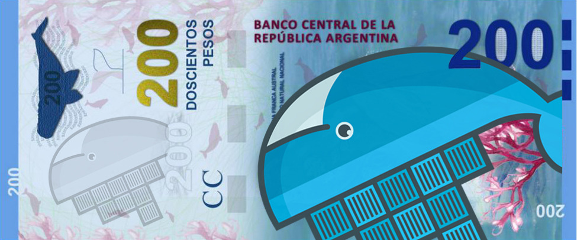
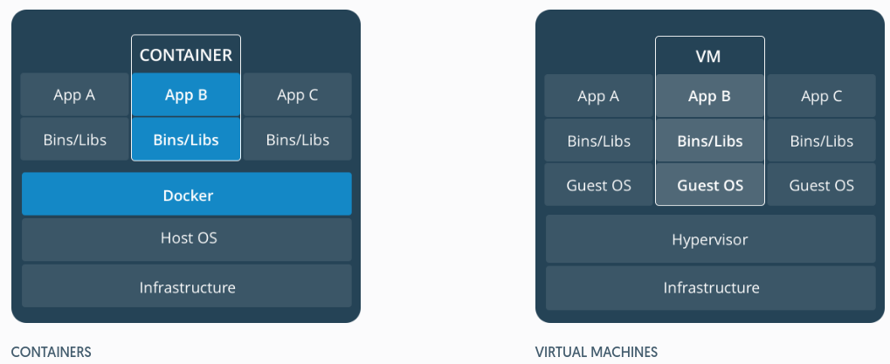
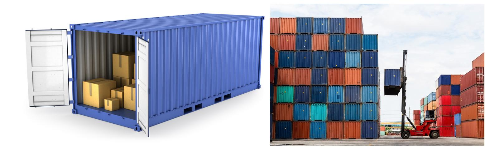
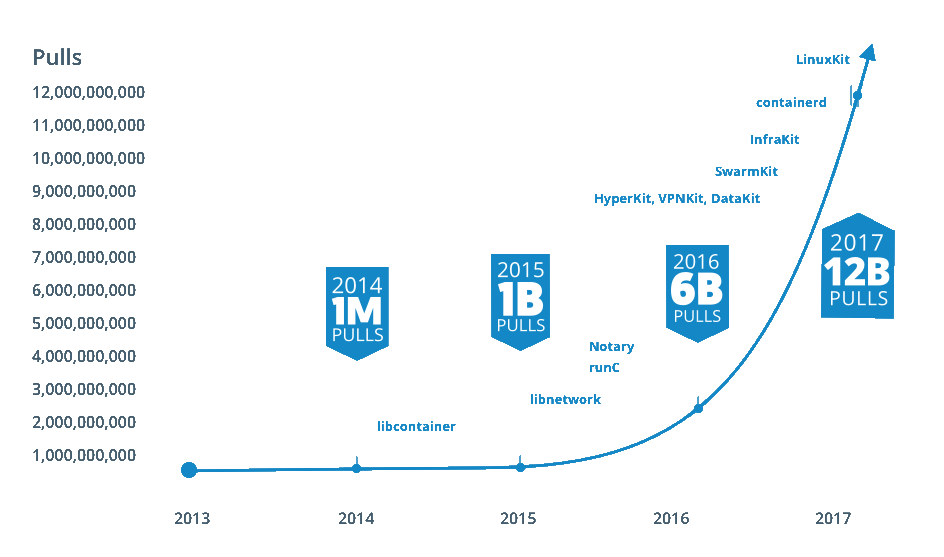

Introducción a Docker

Ing. Yonatan Romero
Universidad Nacional de La Matanza
Historia de la containerización
1979 - chroot
Introducido en Unix v7. System call para cambiar el directorio root de un proceso y sus hijos en una nueva ubicación en el sistema de archivos
Segrega el acceso a archivos para cada proceso.
2000 - FreeBSD Jails
Pensado para proveedores de hosting. Permite separar claramente servicios entre los clientes para mejorar la seguridad.
Permite al administrador particionar un sistema FreeBSD en pequeños e independientes sistemas llamados "jails". Cada uno tiene dirección IP y configuración propia
2001 - Linux VServer
Como los jails permite particionar recursos (Sistema de archivos, IP, memoria) de un sistema con kernel Linux.
2004 - Solaris containers
Sun liberó solaris container en Solaris 10 que combina el control de recursos y separación de límites a través de zonas, que fueron capaces de aprovechar las características como snapshots y clonación de ZFS.
2005 - OpenVZ
Permite que un servidor físico ejecute múltiples instancias de sistemas operativos aislados, conocidos como Servidores Privados Virtuales (VPS en inglés).
OpenVZ ofrece menor flexibilidad en la elección del sistema operativo: tanto los huéspedes como los anfitriones deben ser Linux (pueden ser distintas distribuciones).
2006 - cgroups
Process containers (Desarrollado por Google) fue diseñado para limitar, contabiliza y aislar el uso de recursos (CPU, memoria, acceso a disco y red) de una colección de procesos.
Fue renombrado a cgroups cuando fue agregado al kernel Linux 2.6.24
2008 - LXC
Fue la primera implementación de contenedores Linux. Fue implementado usando cgroups y Linux namespaces sin requerir ningún parche.
2011 - Warden
Implementación de contenedores de CloudFoundry. Provee una API para la administración de contenedores.
Fue desarrollado con arquitectura cliente-servidor para administrar una colección de contenedores a través de multiples hosts.
2013 - LMCTFY
Let Me Contain That For You - Versión open source de Google container stack. Provee contenedores Linux, con capacidad de crear sub-contenedores.
2013 - Docker
Inicialmente utilizaba LXC, actualmente utiliza su propia librería, libcontainer.
Ofrece el repositorio DockerHub donde los desarrolladores pueden compartir los contenedores. Permite su despliegue en pocos segundos.
2016 - rkt
Alternativa a Docker creada por CoreOS. Permite ejecutar imágenes de Docker. Hace las mismas cosas que Docker, pero mejor integrada con su sistema operativo y Kubernetes.
Compatibilidad con imágenes Docker y OCI (Open Container Images)
Container vs máquina virtual
Se puede combinar ambas tecnologías

Términología
- Image
- Colección de todas los archivos que componen nuestra aplicación de software. Estático
- Container
- Instancia de nuestra aplicación en tiempo de ejecución. Dinámico.
Filesystems Docker

Utilizando docker
run
Ejecuta un comando en un contenedor
docker run busybox echo "Hello World!"
Ejecutar un comando interactivo
Ejecuta un comando interactivo y borrar el contenedor al finalizar
docker run -ti --rm busybox sh
Compartir carpetas y archivos
docker run -ti --rm -v "/cfg:/cfg:ro" busybox sh
Exponer puertos
docker run -p 80:80 httpd
pull
Descargar imágenes desde repositorio (Por defecto DockerHub)
docker pull busybox
search
Buscar imágenes en repositorios
docker search jenkins
ps
Ver contenedores en ejecución
docker ps
diff
Ver cambios en contenedores
docker diff 6f8cdfb6976c
stop
Detiene un contenedor en ejecución. Utiliza la señar SIGTERM(15), si el contenedor no se detiene utiliza SIGKILL(9)
docker stop 6f8cdfb6976c
start
Vuelve a ejecutar un contenedor detenido
docker start 6f8cdfb6976c
restart
Reinicia el contenedor
docker restart 6f8cdfb6976c
pause
Suspende la ejecución del contenedor
docker pause 6f8cdfb6976cdocker unpause 6f8cdfb6976c
commit
Guarda los cambios efectuados en una nueva imagen
docker commit 6f8cdfb6976c someuser/example
images
Ver las imágenes descargadas en el sistema
docker images
rm
Eliminar contenedores detenidos
docker rm 6f8cdfb6976c
rmi
Eliminar imágenes que no estén siendo utilizadas
docker rmi someuser/example
Construyendo imágenes
Dockerfile
Archivo que describe cómo debe construirse una imagen docker. Brinda una forma clara de automatizar la construcción de contenedores.
Formato
Es un archivo de texto con un formato parecido a un Makefile. Cada instrucción es ejecutada en un contenedor distinto creando una nueva capa en el sistema de archivos
Ejemplo
# Dockerfile
FROM busybox:latest
CMD echo Hello world!
build
Construye una imagen utilizando el Dockerfile
docker build .
tag
Permite asignar un nombre amigable a una imagen
docker tag ccd4f144c764 busyboxplus
Dockerfile
ADD
Copia archivos desde el host a la imagen
ADD proyecto.war /app
ENV
Establece una variable de entorno. Puede ser accedida desde la aplicación
ENV DEBUG_LVL 3ENV APACHE_LOG_DIR /var/log/apache
USER
Permite establecer el usuario con el que se ejecutará el contenedor. Por defecto se utiliza el usuario root
USER 73
WORKDIR
Cambia el directorio de trabajo
WORKDIR /app/
VOLUME
Crea un volumen que será conpartido entre el host y el contenedor o entre otros contenedores
VOLUME /var/www/
EXPOSE
Abre un puerto TCP o UDP para la comunicación entre el contenedor y el mundo exterior
EXPOSE 80 443EXPOSE 53/udp
RUN
Ejecuta un comando en el contenedor (en tiempo de construcción)
RUN echo Soy un ejemploRUN ["echo", "Soy un ejemplo"]
CMD
Ejecuta un comando en el contenedor (en tiempo de ejecución).
Puede ser sobreescrito con docker run
CMD ["echo", "CMD demo"]
ENTRYPOINT
Al igual que CMD ejecuta un comando en tiempo de ejecución, se ejecuta siempre.
ENTRYPOINT ["/entrypoint.sh"]
ONBUILD
Permite ejecutar un comando cuando otra imagen es contruida utilizando esta como base.
ONBUILD ADD config /etc/appconfig
.dockerignore
Cuando se construye una imagen, se envía el contexto de construcción completo al demonio docker. Con este archivo se marcan los archivos que no serán enviados al demonio docker al construir.
# .dockerignore
.git
*.tmp
Buenas prácticas
Dockerfiles bien escritos mejoran la calidad de nuestra aplicación
Containers efímeros
Los contenedores pueden ser detenidos, destruídos y recreados con el mínimo de esfuerzo y configuración
Usar .dockerignore
Evitar instalar paquetes innecesarios
Cada contenedor debe tener un único propósito
Minimizar el número de capas
Ordenar alfabéticamente los argumentos multilinea
Evita repetición de parámetros, mejora la lectura y revisión
RUN apt-get update && apt-get install -y \
bzr \
cvs \
git \
mercurial \
subversion
Aprovechar el caché
Orquestación
Orquestación
Sistemas operativos diseñados para Docker
Laboratorio para aprender jugando
Crecimiento Docker
Referencias
- A Brief History of Containers: From 1970s chroot to Docker 2016. Rani Osnat (última consulta 29 de mayo de 2017)
- Sitio oficial de Docker
- Learning Docker. Pethuru Raj, Jeeva Chelladhurai, Vinod Singh. (2015). Packt Publishing. ISBN 978-1-78439-793-7
- Best practices for writing Dockerfiles. Docker (última consulta 29 de mayo de 2017)